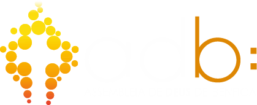
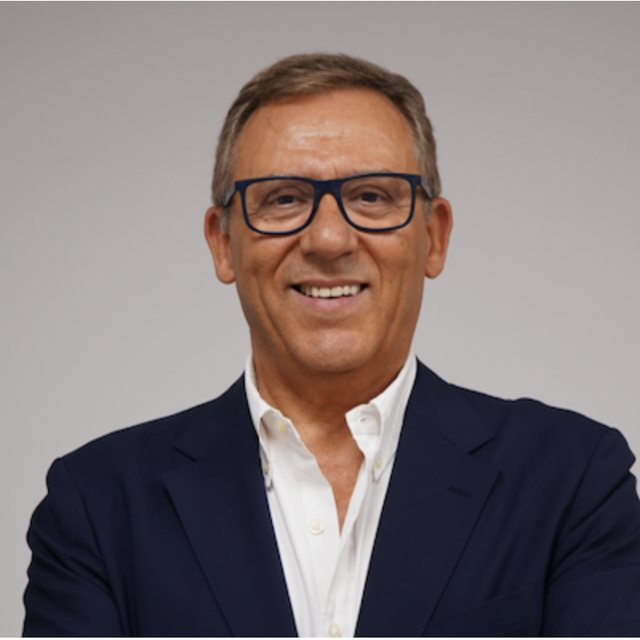
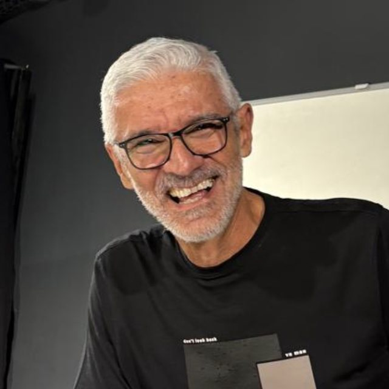

28 e 29 de Novembro de 2026 · AD Benfica
Fé, família e gerações
Inscreve-teOs homens aprenderam a aguentar em silêncio. Mas o que não se nomeia não se cura: o cansaço, a irritação, o isolamento e a perda de propósito acabam por abalar as fundações. Este fim de semana é para homens de todas as idades, lado a lado, tratarem da engenharia e da manutenção real da sua vida: mente, família e fé.
“Se o Senhor não edificar a casa, em vão trabalham os que a edificam.”Salmo 127:1
O sofrimento silencioso, a irritabilidade, o isolamento, o burnout e a perda de propósito na reforma.
Literacia emocional e solidão: do isolamento digital dos jovens à solidão dos mais velhos.
Ferramentas práticas: perceber quando um amigo está em risco e quebrar o tabu de pedir ajuda.

Psicólogo, psicoterapeuta e professor universitário

Pregador Convidado
Sofrimento silencioso, burnout na carreira e a solidão/reforma nas diferentes idades.
Os homens não foram educados a nomear o que sentem.
Sessão de Q&A aberta e estratégias de saúde quotidiana.
Obrigado a todos os que se inscreveram. Até já na [RE]CONSTRÓI! 🧱
AD Benfica
R. Julião Quintinha 16, 1500-381 Lisboa